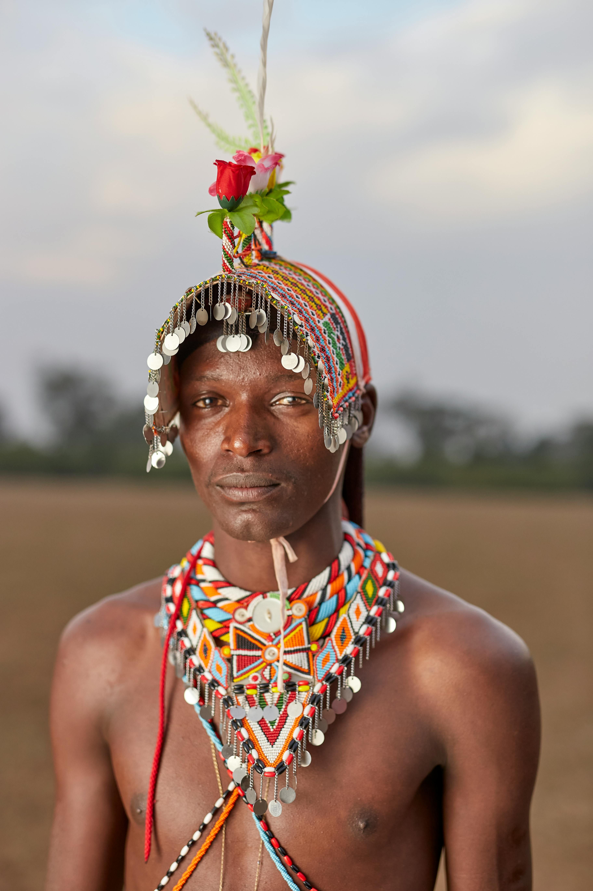
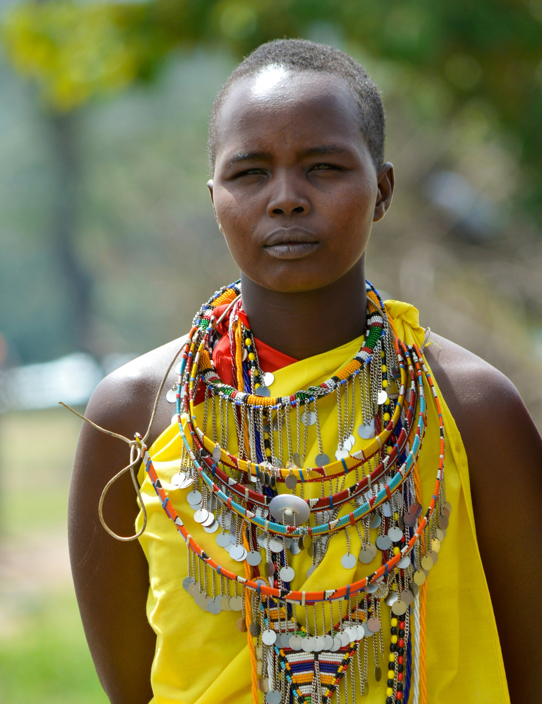

Get to know the talented hands behind our unique collection. Each artisan brings their
passion, skill, and
cultural heritage to every piece they create, preserving the timeless traditions of the Maasai people.

Moses Ole Lengo
Specialty: Beadwork and Leather crafting
Moses is a talented Maasai artisan from the Loita Hills in Kenya, known for his intricate beadwork and
leather crafting. Growing up in a family of artisans, he learned traditional techniques from his father and
grandfather. Moses specializes in creating beaded jewelry, belts, and sandals that reflect Maasai cultural
symbolism and colors. His work, characterized by vibrant reds, blues, and whites, embodies the values and
stories of his community. Moses is passionate about preserving Maasai traditions and sharing his culture
with the world. He is dedicated to empowering local artisans and promoting sustainable practices in the
craft industry.

Naserian Koiya
Specialty: Beadwork and Jewelry Design
Naserian is a skilled Maasai artisan from the Ngorongoro region in Tanzania. Growing up
in a family of artisans, she learned traditional beading and crafting techniques from her mother and
grandmother. Naserian specializes in creating intricate beadwork jewelry, including bracelets, necklaces,
and earrings that reflect Maasai cultural symbolism and colors. Her work, characterized by vibrant reds,
blues, and whites, embodies the values and stories of her community. Through her craft, Naserian not only
celebrates her heritage but also contributes to local initiatives supporting women artisans. She is
passionate about preserving Maasai traditions and sharing her culture with the world.

Lekisho Ole Saitoti
Specialty: Weaving and Fabric Craft
Lekisho is a master Maasai craftsman from the Amboseli region of Kenya,
renowned for his expertise in traditional leatherwork and spear-making. From a young age, Lekisho was
trained in the art of leather crafting, where he uses locally sourced hides to create belts, sandals, and
decorated shields. His craftsmanship reflects the resilience and spirit of the Maasai people, with each item
carrying cultural significance and intricate detailing. Lekisho is dedicated to passing down his skills to
younger generations, ensuring that Maasai art and identity remain vibrant. He often collaborates with
artisan collectives, bringing his work to both local and international markets.